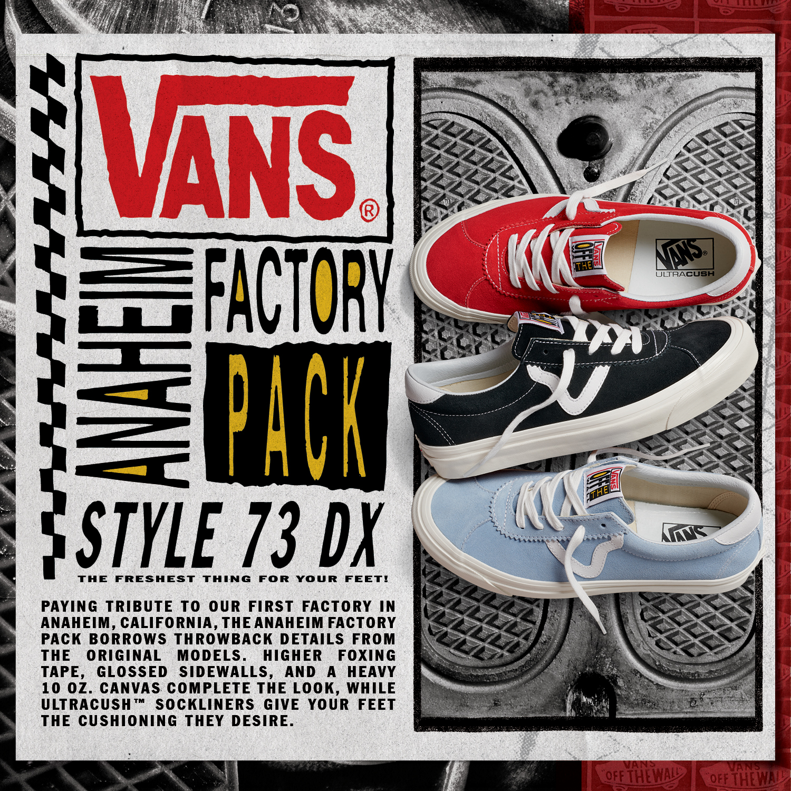

Легендарное возвращение для фанатов классики и крутых винтажных кед.
Anaheim Factory Pack отдает дань уважения первой фабрике Vans в калифорнийском Анахайме, заимствуя детали оригинальных моделей, которые производились в прежние годы существования бренда. В то же время комфорт обуви улучшен благодаря обновленным стелькам UltraCush. Элементы прошлого – это числовые названия силуэтов, цвета, переизданные принты, глянцевая резиновая боковая подошва, хлопковые шнурки, а также подкладка из плотного хлопка.
Style 73 DX присоединяется к программе "возрождения" оригинальных моделей Vans Anaheim Factory. Выполненные в спортивной ретро-стилистике 90-х, эти кеды установлены на высокую подошву с глянцевым блеском и обладают вдохновленными наследием Vans элементами. Среди них – цветовая гамма, замшевая верхняя часть, кастомный тканый лейбл. Амортизирующие стельки UltraCush дополняют внутреннюю "начинку" для превосходного комфорта.